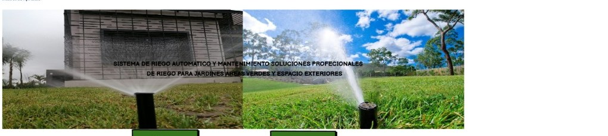
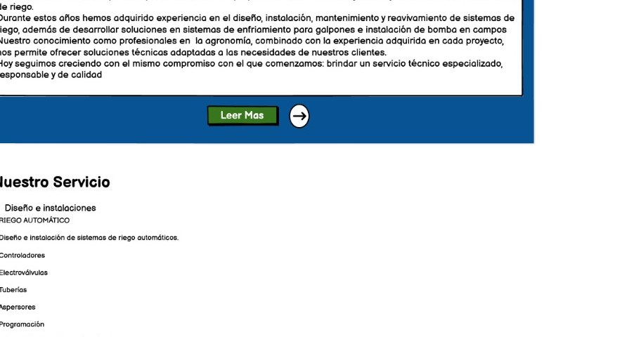

01
Ahorro de agua
Automatización y programación para utilizar el recurso hídrico de forma eficiente.
Conocer solución →
RIEGO URBANO · SOLUCIONES PROFESIONALES
Diseñamos, instalamos y mantenemos sistemas de riego automatizados para jardines, parques, condominios y áreas exteriores.
NUESTRA PROPUESTA
La propuesta nace ante el crecimiento urbano de Santa Cruz y la necesidad de contar con personal técnico especializado en sistemas de riego. El objetivo es brindar tranquilidad, optimizar el recurso hídrico y mantener saludables jardines y áreas verdes.
Automatización y programación para utilizar el recurso hídrico de forma eficiente.
Conocer solución →
02Sistemas actualizados que reducen tareas manuales y facilitan el control.
Ver instalación → 03
03Riego adecuado para conservar césped, jardines y espacios verdes.
Ver mantenimiento →QUIÉNES SOMOS
RIEGO URBANO surge para ofrecer soluciones de riego e instalaciones completamente automatizadas con tecnología actualizada. Buscamos atender al cliente de forma rápida y eficiente.
Conocer nuestra historia →Soluciones adaptadas a cada espacio, con enfoque en eficiencia, ahorro y cuidado de nuestras áreas verdes.